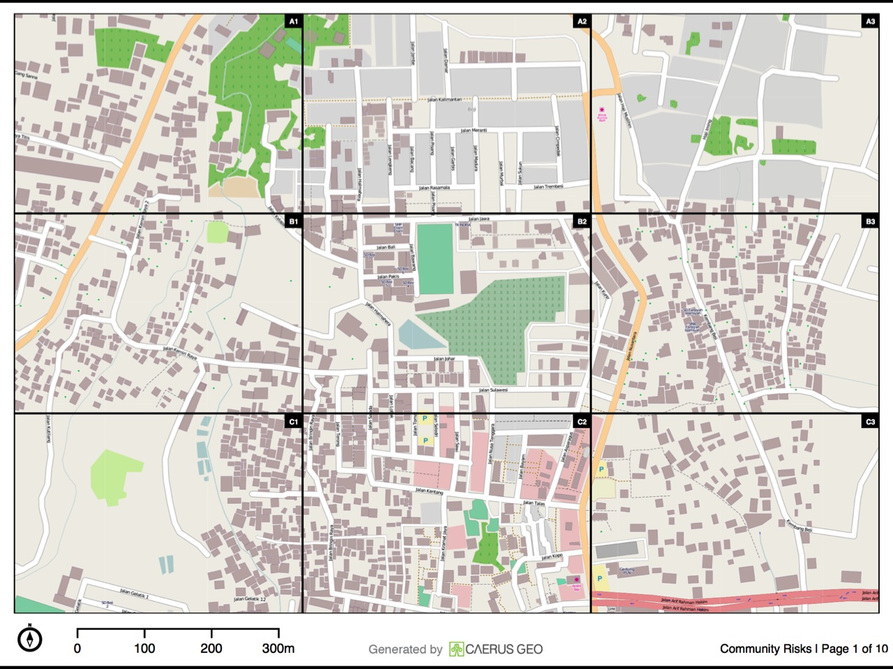
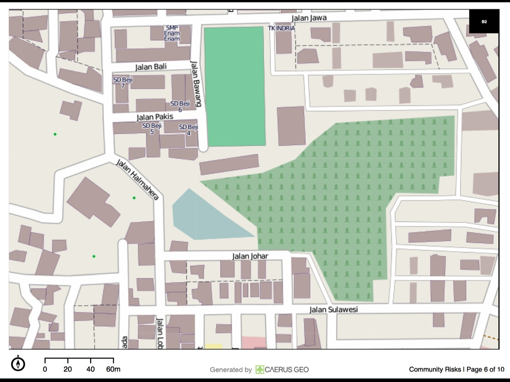
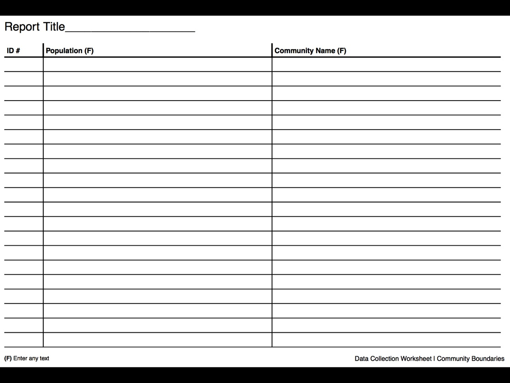
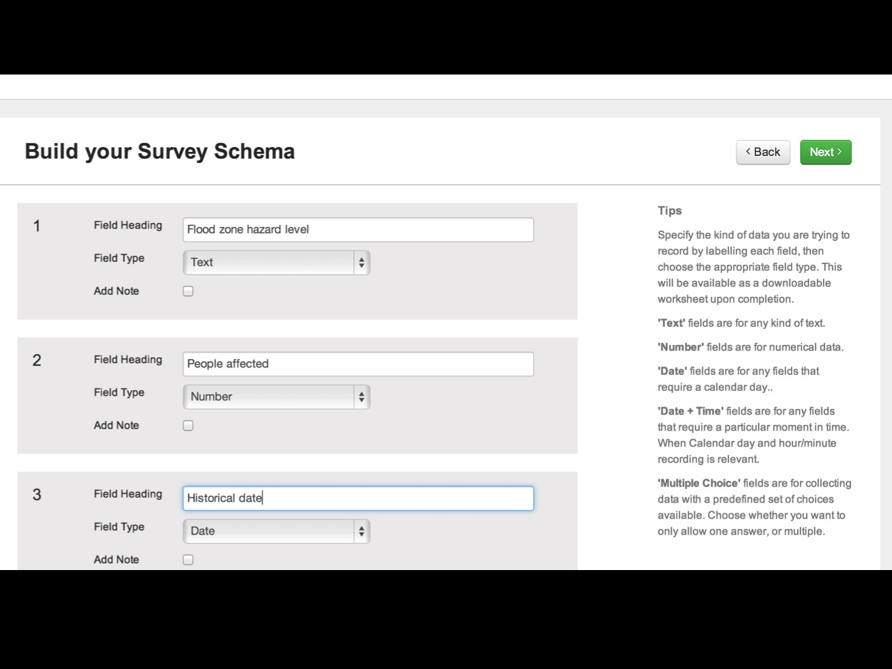
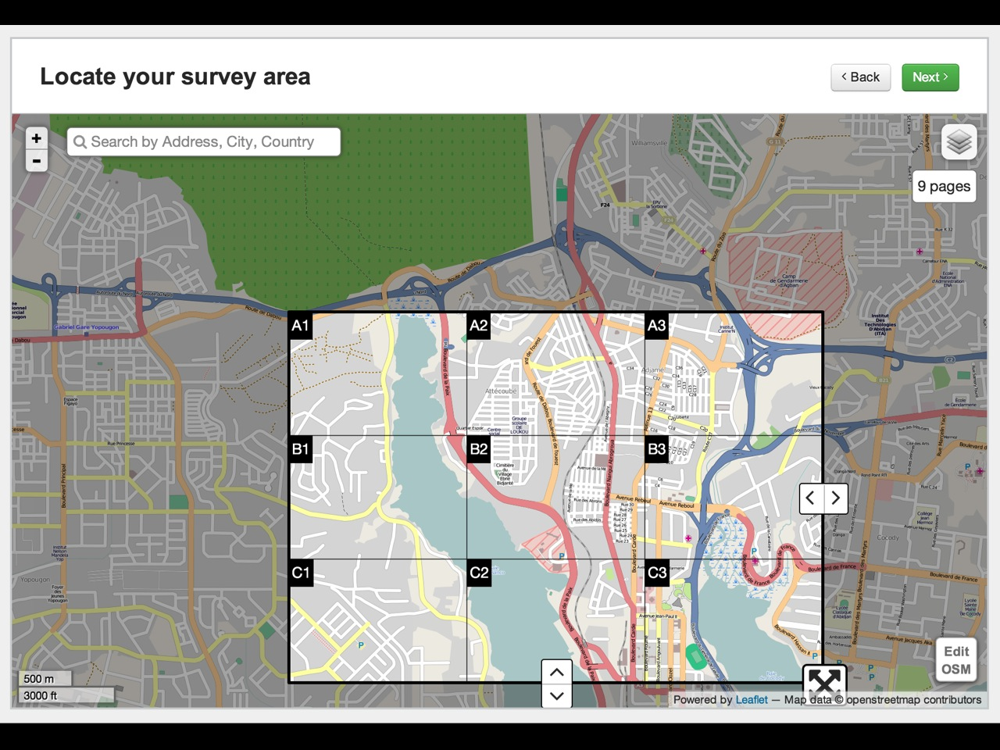
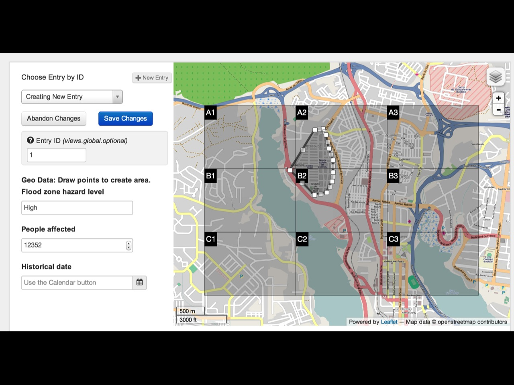
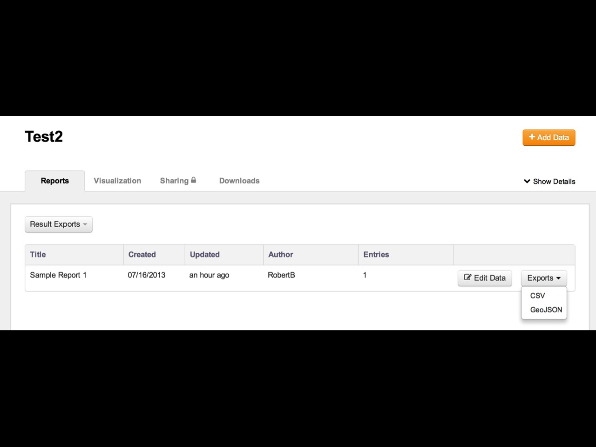
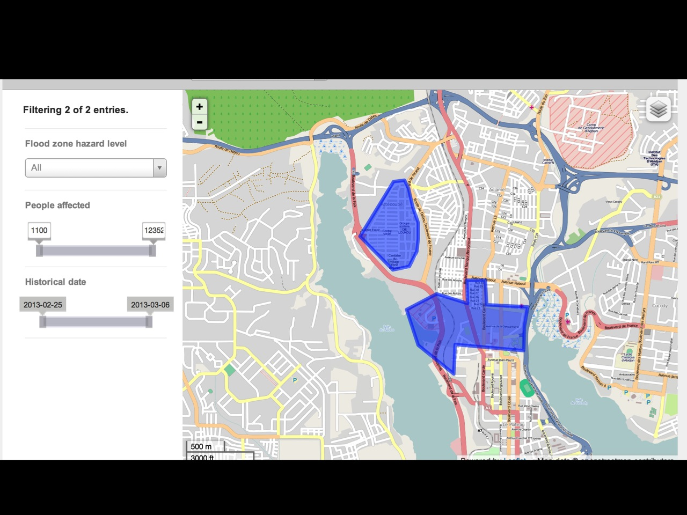

CaerusGeo
What is it?
Geographic Data Collection
It’s a map


It’s a spreadsheet

How does it work?
Design a “survey”

Make an atlas

Print
Collect data
Enter data

Export data
Print

Create GIS data
*
(without knowing a thing about GIS)

Who can use CaerusGeo?
Program staff
Red Cross Volunteers
Community members
Kids
Anyone who can use a computer
Anyone who can draw
Anyone who can draw
Questions?